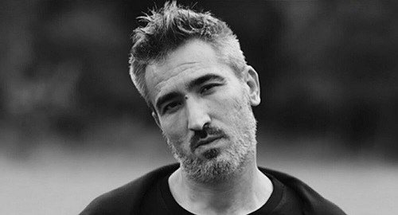

SAGOPA KAJMER(Yunus Özyavuz)
HAYATI
Sagopa Kajmer veya bilinen diğer adlarıyla DJ Mic Check, Silahsız Kuvvet ya da gerçek adıyla Yunus Özyavuz (d. 17 Ağustos 1978, Samsun) Türk rap müzisyeni, müzik yapımcısı ve DJ.
Yunus Özyavuz, 17 Ağustos 1978'de Samsun'da doğdu. İlköğretim, ortaöğretim ve lise eğitimini Samsun'da tamamladı. Samsun'da yerel bir radyoda DJ'lik yaparak işe başladı. Daha sonra üniversite eğitimi için İstanbul'a geldi ve İstanbul Üniversitesi Edebiyat Fakültesi, Fars Dili ve Edebiyatı bölümünü bitirerek mezun oldu.
1998’de Kuvvetmira adlı rap grubunu kurdu ve grupta Silahsız Kuvvet adıyla yer aldı. Türk rap sanatçılarının 1999 yılında çıkardığı rap albümü olan Yeraltı Operasyonu'nda yer aldı. Başta Silahsız Kuvvet mahlasını kullanan sanatçı, sonraları Sagopa Kajmer ismini kullanmaya başladı ve Sagopa Kajmer isimli bir albüm çıkardı. Bu albümden sonra On Kurşun'u, 2004'te de Bir Pesimistin Gözyaşları'nı piyasaya sürdü. G.O.R.A. filminin müziklerini yaptı. 2005'te Romantizma albümünü çıkardı. 11 Ağustos 2005'te kendi plak şirketi Melankolia Müzik'i kurdu. 27 Haziran 2006'da Melankolia Müzik etiketiyle Kafile isimli bir derleme albüm yayımladı. 1 Ağustos 2006'da Esen Güler (Kolera) ile evlendi. 2007'de Kolera ile İkimizi Anlatan Bir Şey isimli bir düet albümü yayımladı. 2008'de Kötü İnsanları Tanıma Senesi adlı bir solo albümü, 2009'da Şarkı Koleksiyoncusu, 2010'da Kolera ile 2. düet albümü olan Bendeki Sen'i, 2011'de Saydam Odalar'ı, 2013'te Kalp Hastası, 2017'de Ahmak Islatan albümünü, 2019'da Sarkastik EP albümünü yayımladı. 12 Haziran 2020'de ise rapçi Patron ile "Siyah" teklisini yayımladı. 17 Temmuz 2020'de Faruk Sabancı ile "Bu Sen Değilsin" teklisini yayınladı. Ayrıca 17 Ağustos 2020 doğum gününde kuzeni Gökhan Özyavuz ile 5 parçadan oluşan Yunus EP albümünü yayımladı.

KARİYERİ
1978-2002: İlk Yılları ve Kariyerinin Başlangıcı
1998'de Kuvvetmira isimli bir rap grubu kurdu. 1999'da Yeraltı Operasyonu'nda Silahsız Kuvvet adıyla yer aldı. Aynı tarihte Gerilim 99 (Promo) adlı albüm çıkardı. Yine aynı tarihte ilk EP'si Pesimist EP 1'i yayımladı. 2000'de Ceza ile birlikte Toplama Kampı isimli bir albüm yayımladı. 2001'de Sözlerim Silahım'ı yayımladı. Aynı tarihte One Second'ı yayımlandı. 2002'de İhtiyar Heyeti adlı bir albüm çıkardı. Yine aynı tarihte Ceza'nın Med Cezir albümünün prodüksiyonluğunu yaptı. Aynı yıl Sagopa Kajmer adıyla Sagopa Kajmer albümünü çıkardı. Bu albümden sonra On Kurşun adlı bir albüm yayımladı. Aynı tarihte internet üzerinden Pesimist EP 2 isimli bir EP yayımladı.
1978-2002
2004'te Radikal gazetesine verdiği röportajda 7 yıl boyunca kullandığı Silahsız Kuvvet mahlasını bırakıp Sagopa Kajmer olarak devam edeceğini söyledi. Aynı tarihte Rapstar albümünün prodüktörlüğünü yaptı. 5 Mart 2004'te Hammer Müzik etiketiyle Bir Pesimistin Gözyaşları adlı bir albüm çıkardı. Dr. Fuchs'un 2004'ye yayımlanan Huzur N Darem albümünün yapımcılığını yaptı. Daha sonra Cem Yılmaz'ın G.O.R.A. filmi için de müzikler hazırladı ve "Al 1'de Burdan Yak" şarkısının klibinde Cem Yılmaz ile birlikte oynadı. 20 Ağustos 2005'te İrem Records etiketiyle Romantizma isimli bir albüm çıkardı ve albümdeki "Vasiyet" adlı şarkıyı kliplendirdi. "Vasiyet" adlı klip, 2006'da düzenlenen 12. Kral TV Video Müzik Ödülleri'nden En İyi Video Klip ödülünü kazandı. Yine aynı tarihte Pesimist EP 3'ü yayımladı. Sagopa Kajmer, hem albümlerini kendi plak şirketinden çıkartmak hem de yeni yeteneklere kapı açmak amacıyla 11 Ağustos 2005'te Kolera ile birlikte Melankolia Müzik isimli müzik şirketini kurdu. Sagopa Kajmer, Kuvvetmira'da yer alan diğer rap sanatçıları ile birlikte 27 Haziran 2006'da Melankolia Müzik etiketiyle Kafile albümünü çıkardı ve albümün prodüktörlüğünü yaptı. 18 Mayıs 2006'da Pesimist EP 4 - Kurşun Asker'i yayımladı. 26 Nisan 2007'de Kolera ile düet albümleri olan İkimizi Anlatan Bir Şey'i dinleyicilerine sundu. 2008'de ilk solo albümü Kötü İnsanları Tanıma Senesi'ni piyasaya sürdü ve albümde yer alan "Ben Hüsrana Komşuyum" ve "Düşersem Yanarım" adlı parçaları kliplendirdi. 6 Mayıs 2008'de ise Kolera ile birlikte düet yaptığı "Bu Şarkıyı Zevk İçin Yaptık" adlı bir single yayımladı. 27 Aralık 2008'de Pesimist EP 5 - Kör Cerrah'ı kendi resmî sitesi üzerinden yayımladı. 19 Şubat 2009'da Şarkı Koleksiyoncusu albümünü yayımladı. 1 Nisan 2009'da "Beslenme Çantam" adlı bir single yayımladı ve şarkıda Kolera ile düet yaptı. 18 Temmuz 2009'da "Hain" (Kolera ile düet) adlı single yayımladı.
2010-Günümüz
2010'da eski eşi Kolera ile birlikte 2. düet albümü Bendeki Sen'i yayımladı. Bendeki Sen ilk kez düzenlenen TRT Müzik Ödülleri'nde halkın oylarıyla belirlenen "Yılın Albümü" kategorisine aday gösterildi. Ayrıca yine 2010'da yayımlanan Kafile 2'nin yapımcılığını yaptı. 4 Şubat 2010'da "Ardından Bakarım" adlı bir single yayımladı. 2011'de Saydam Odalar albümünü piyasaya sürdü. "Kaç Kaçabilirsen" ve "Bu İşlerden Elini Çek" şarkılarında Kolera ile düet yaptı. 2012'de ise "Istakoz" ve "40" adlı şarkılarını internet üzerinden yayımladı. 2013 yılı içerisinde yeni bir albüm çıkaracağını resmi Twitter hesabından duyurdu. Sagopa Kajmer, kendi orkestrası olan Pesimist Orkestra ile birlikte 2013 yılının Mart, Nisan ve Mayıs aylarında bir turne düzenledi ve turne kapsamında 15 şehirde konser verdi. 8 Temmuz 2013'te Kalp Hastası albümünü satışa sundu ve "İster İstemez" adlı şarkıda kendisine eşi Kolera eşlik etti. Albüm çıkmadan bir gün önce Sagopa Kajmer, "Düşünmek İçin Vaktin Var" adlı şarkısını internet üzerinden yayımladı ve şarkıya bir de klip çekti. Daha sonra bu şarkı Sagopa Kajmer'in Kalp Hastası albümünde de yer aldı. Albüm çıktıktan 2 hafta sonra "Uzun Yollara Devam" adlı parçasına "Düşünmek İçin Vaktin Var" klibinin devamı niteliğinde olan bir klip çekti. 2014 yılının başlarında Pesimist EP 6 isimli EP'sini yayımlayacağını duyurdu ve 20 Mart 2014'te EP'yi yayımladı. 6 Mayıs 2014'te Birol Giray (BeeGee) ile birlikte "Abrakadabra" adlı parçayı ücretsiz olarak dinleyicileriyle paylaştı. Son olarak Cem Adrian'ın "Artık Bitti" şarkısının scratch kompozisyonlarını yazıp şarkıya back vokalde bulundu. 2015 yılının başlarında ise önceden çıkardığı bazı albümlerin beatlerini YouTube üzerinden paylaşmakta ve 1998-2001 yılları arasındaki beatlerini Underground Years isimli birkaç bölümden oluşan toplama albümleri yine YouTube aracılığıyla paylaştı. 17 Haziran 2015 tarihinde "Bilmiyorum" adlı parçasını YouTube üzerinden paylaştı. 12 Kasım 2015'te Birol Giray ile ikinci çalışması "Naber"i yayımladı ve şarkıya klip çekti. 2016'nın Mart ayında DJ Tarkan ile yaptığı "Tecrübe" adlı çalışmasını yayımladığını resmi sitesi üzerinden duyurdu. 31 Aralık 2016'da Koleraflow YouTube kanalı üzerinden "366.Gün" adlı klibini yayımladı. 2017'de "Ne Kaybederdin" adlı parçayı resmî YouTube kanalı üzerinden yayımladı. Sagopa Kajmer, 23 Ağustos 2017'de resmî Twitter hesabından yeni bir albüm çıkaracağını duyurdu ve 1 Eylül 2017'de Ahmak Islatan albümünü çıkardı. 31 Aralık 2017'de resmî YouTube kanalı üzerinden "Sorun Var" adlı şarkısını yayımladı. 29 Mayıs 2018'de resmî YouTube hesabından şarkının klibini yayımladı. 25 Eylül 2018'de Sagopa Kajmer, resmî Instagram hesabından çıkaracağı yeni şarkının 2 Ekim'de tüm dijital platformlarda olacağını, 1 gün öncesinde ise YouTube'da olacağını duyurdu. 1 Ekim 2018'de "Oldu Olanlar" adlı şarkıyı resmî YouTube hesabından yayımladı. Sagopa Kajmer 41. yaş gününde "Avutsun Bahaneler" adlı şarkısını yayımladı. 29 Kasım 2019 tarihinde ise Sagopa Kajmer Sarkastik EP albümünü çıkardı. Albümde öne çıkan şarkısı ise "Toz Taneleri" oldu. Sagopa Kajmer YouTube'da yayımlanan "Toz Taneleri" şarkısının müzik klibinde sigara içerek insanları sigaraya özendirdiği gerekçesiyle bir vatandaşın ihbarı üzerine hakkında soruşturma başlatıldı ve soruşturma kapsamında İstanbul Cumhuriyet Başsavcılığına ifade verdi. 12 Haziran 2020’de Patron ile "Siyah" adında bir şarkı çıkardı. Şarkının müzik videosu Patron’un resmî YouTube hesabından paylaşıldı. 17 Temmuz 2020'de, DJ Faruk Sabancı ile birlikte yaptığı "Bu Sen Değilsin" isimli parçasını YouTube kanalından yayımladı. 42. yaş gününde ise Go-Khan ile birlikte kaydettiği Yunus EP yayımlandı.
SAGOPA KAJMER ANLAMI
Yunus Özyavuz kendi tabiriyle Sagopa Kajmer'in kaynağını şu sözlerle açıklıyor:
“Mısır'da eski bir piramit... araştıran da Kajmeri. İşte, orada araştırmasını yaparken kendi mahlası Sagopa'nın Kajmer'i... sırrını çözen insan.”
ALBÜMLERİ:
• Yeraltı Operasyonu (1999)
• Gerilim 99 (Promo) (1999)
• Toplama Kampı (2000)
• Sözlerim Silahım (2001)
• İhtiyar Heyeti (2002)
• On Kurşun (2001)
• One Second (2002)
• Sagopa Kajmer (2002)
• Bir Pesimistin Gözyaşları (2004)
• Romantizma (2005)
• İkimizi Anlatan Bir Şey (2007)
• Kötü İnsanları Tanıma Senesi (2008)
• Bendeki Sen (2010)
• Saydam Odalar (2011)
• Kalp Hastası (2013)
• Ahmak Islatan (2017)